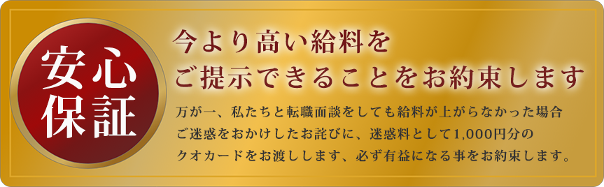

施工管理は
やめとけって
誰が言ってるの？
手に職JOB
手に職をつけるなら
施工管理
設備施工管理技士
（前職）年収280万円
420
完全週休二日制
建築施工管理技士
（前職）年収280万円
530
完全週休二日制
設備施工管理技士
（前職）年収280万円
470
完全週休二日制
来社不要！自宅でオンライン面談受付中！
施工管理の3つのメリット
給料が高い
施工管理の最大のメリットは、なんと言ってもその待遇のよさ。
つまり、給料が高い点と言えるでしょう。
危険な仕事である半面で、同年代で他業種の給料水準と比べて高給の場合が多いです。そもそも建設業は大きなお金が動く仕事が多いため、比較的給料の払いはよい傾向にあります。
もちろん、時期によっては、公共事業が減らされるなど苦しい局面もありましたが、東日本大震災以降には徐々に活気が戻ってきています。特に、大手ゼネコンなどは給与面の待遇が非常によい会社も多く、一年目で車を買うといったことも夢ではありません。

キャリア形成がしやすい
施工管理の仕事ではさまざま案件を扱うことを通じて、多くの人脈を作れるというメリットもあります。
また、施工管理の技術者は建築業界内での需要も高いため、転職のしやすさや職能を活かせれば、独立も可能でしょう。
さらに、最近では女性の施工管理技士も増加傾向にあるため、男性と肩を並べ対等に仕事ができる数少ない職業としても注目を集めています。
やりがい、成果のわかりやすさ
施工管理の仕事では、自分が関わった建設物が末長く使われる点も魅力の一つです。例えば、レインボーブリッジや東京スカイツリーといった、誰もが目にするランドマークと呼ばれるものは、すべて人の手によって作られています。
それらを「作ったのは自分だ！」と家族や友人などに話せる喜びや、自分が手掛けた仕事がいつまでも多くの人に使い続けられる誇らしさは、何物にも代えられないメリットと言えるでしょう
実際に転職成功した方々の声
山本様 25歳
重村様 32歳
女性で施工管理職として入社しました。
最初は施工管理職って「大変」「きつい」などのイメージは少なからずありましたが、いざ入社してみると現場での力仕事などの実作業は一切なく、現場を管理する立場なのでキャリアアップを目指して日々仕事ができています。
またとても大きな建物を立てるのを1から携わっているので完成した時には他業界にはないやりがいを感じられることが一番嬉しいです。初めての道に勇気を出して踏み出してみて今では本当によかったと思っています。
最初は施工管理職って「大変」「きつい」などのイメージは少なからずありましたが、いざ入社してみると現場での力仕事などの実作業は一切なく、現場を管理する立場なのでキャリアアップを目指して日々仕事ができています。
またとても大きな建物を立てるのを1から携わっているので完成した時には他業界にはないやりがいを感じられることが一番嬉しいです。初めての道に勇気を出して踏み出してみて今では本当によかったと思っています。
施工管理の求人紹介をしてもらう

必須項目は入力必須項目です。
給与面に重きに置いて転職をしたのですごく満足しています。
手厚く研修してくれるので未経験でも有意義に仕事ができています。入社して一年以上たちますが、周りに尊敬する先輩が多く毎日楽しく仕事ができているので○○○には感謝しかありません。ありがとうございます。